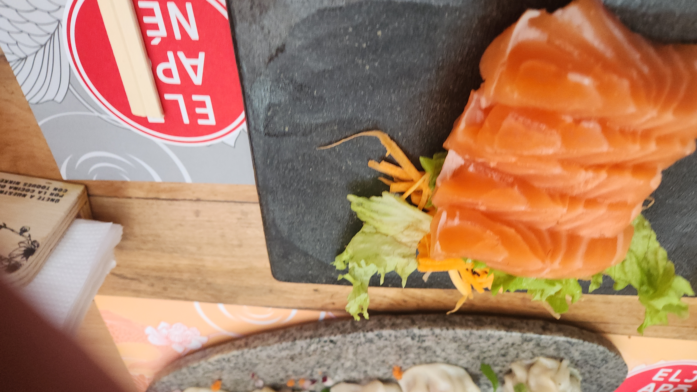
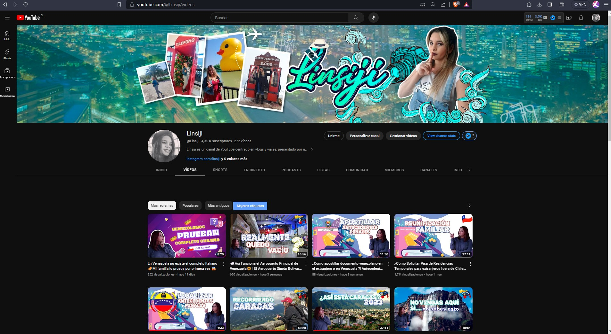

Acerca de mi
soy Desarrollador de software API Connect IBM tambien soy creadora de contenido vlogs en plataforma de Youtube/Linsiji
Fotógrafa de Viajes

Humocaro Bajo, ubicado en el Municipio Morán, es un apacible pueblo de montaña cuyos habitantes, en su mayoría y por varias generaciones, se han dedicado a la actividad agrícola en general; principalmente a la horticultura, a la siembra del café y la caña de azúcar.
Comida Favorita
La palabra Sashimi en Japonés se refiere a “saborear un ingrediente por sí mismo”. Es decir, degustar ese plato por sí mismo y disfrutarlo. Los pescados que suelen utilizarse para estos platos son el atún, el rodaballo, la lubina, el jurel, el bonito y la dorada.
vlogs de viajes
Linsiji es un canal de YouTube centrado en vlogs y viajes, presentado por un creadora carismática. Ofrece contenido entretenido y variado, desde aventuras personales hasta exploración de destinos. ¡Diversión y viajes garantizados!